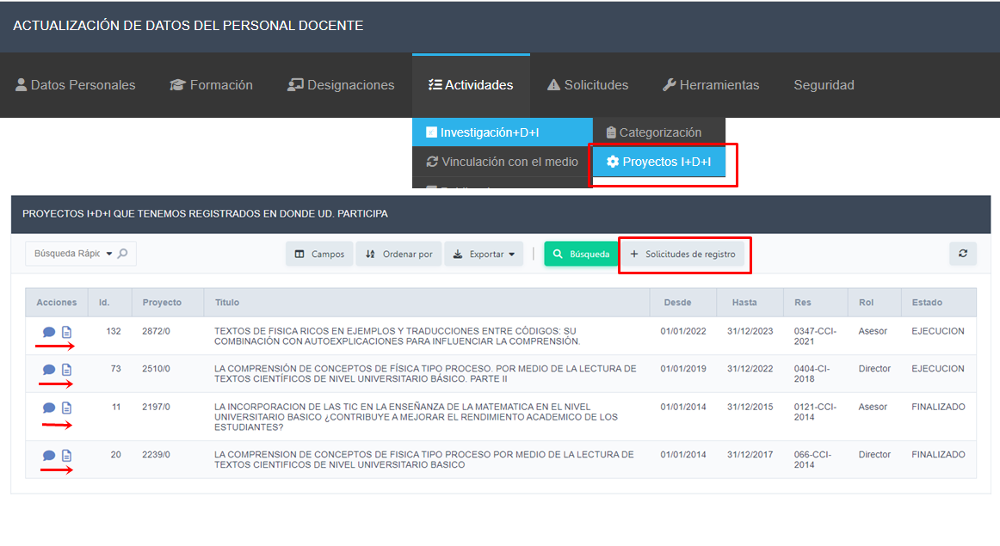

Pasos para consultar o informar Proyectos de Investigación, Desarrollo e Innovación.
-
En este ítem Actividades > Investigación > Proyectos I+D+I, podrá visualizar los Proyectos I+D+I, en los que participó y que la facultad tiene registrados.
 -
En la columna Acciones: Con el icono
 puede iniciar la gestión para solicitar modificaciones del ítem en cuestión, y con el icono
podrá ver la resolución asociada
puede iniciar la gestión para solicitar modificaciones del ítem en cuestión, y con el icono
podrá ver la resolución asociada
-
Haciendo clic en el botón +Solicitudes de Registro, podrá visualizar las solicitudes que están pendientes.

-
Con el icono podrá modificar o eliminar una solicitud. Si requiere enviar una nueva solicitud hacer clic en el botón +Nuevo y verá la siguiente interfaz:
-
Una vez completada la solicitud deberá hacer clic en el botón + Agregar para enviar la solicitud. haciendo clic en el icono podrá visualizar información de cómo completar el campo de información.
-
La Facultad realizará validaciones periódicas de las solicitudes recibidas. Una vez confirmada, podrá visualizarla.